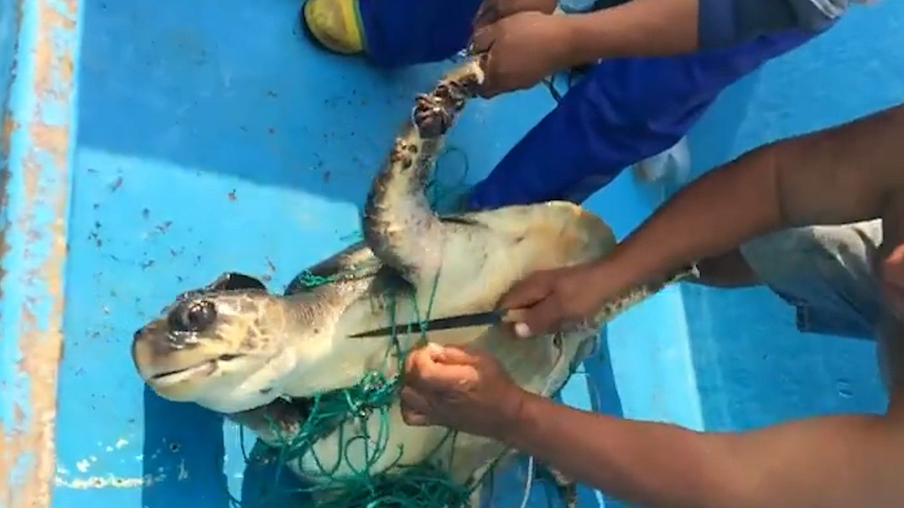
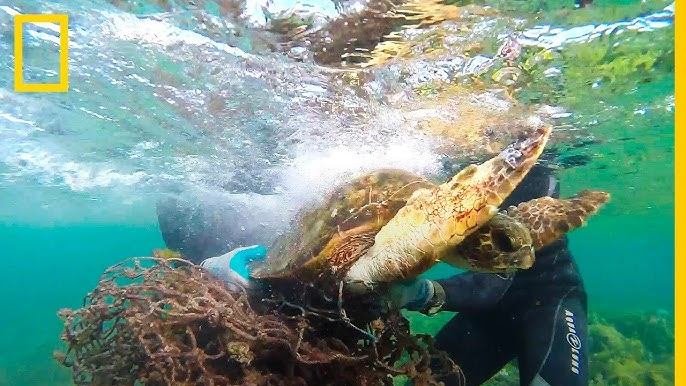
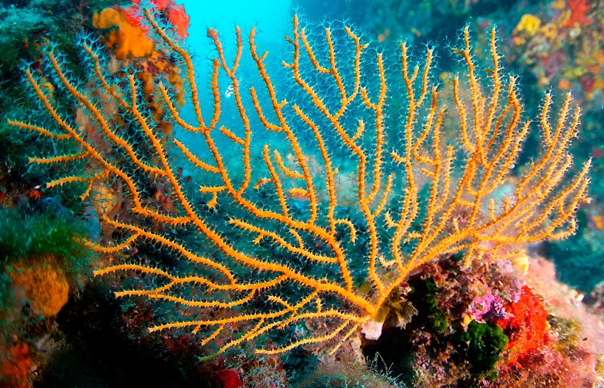
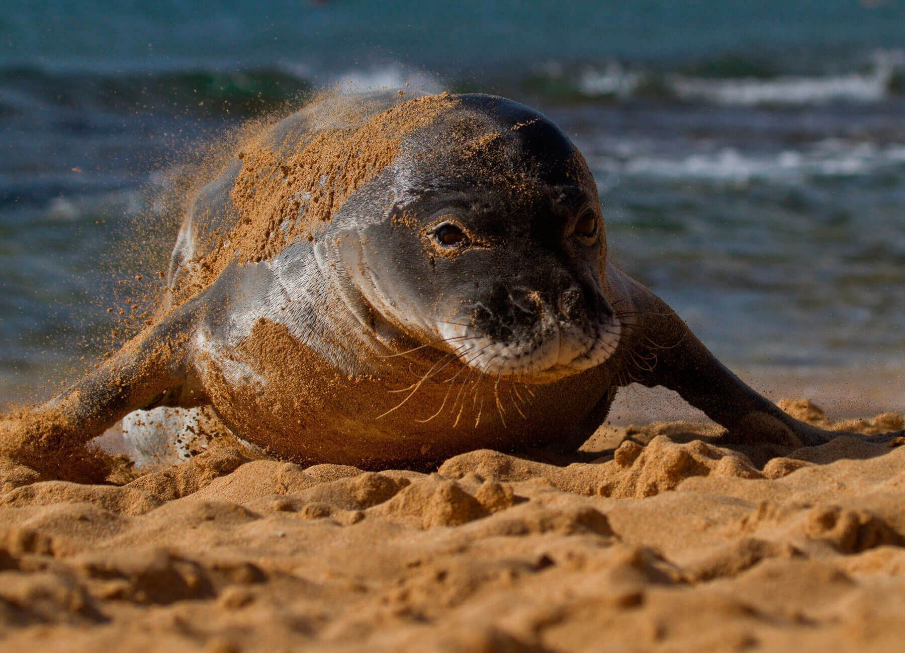
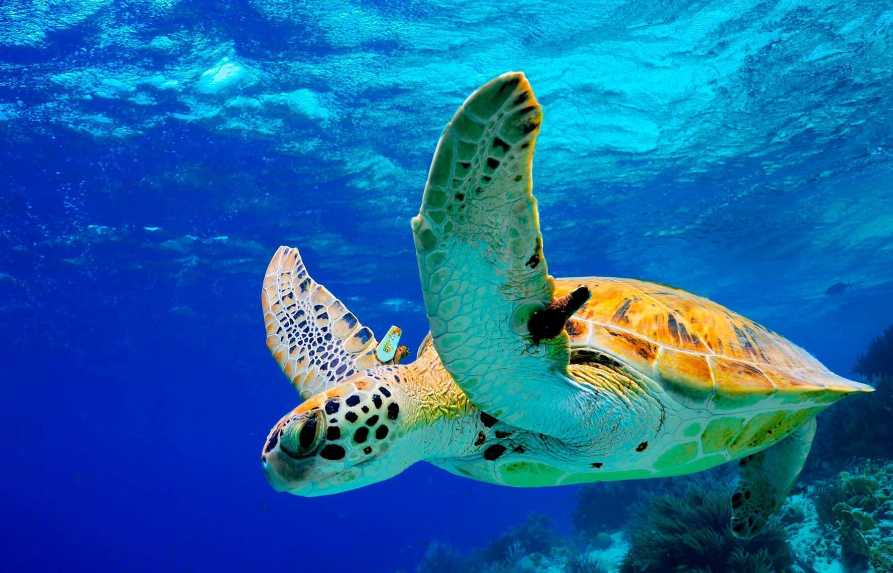
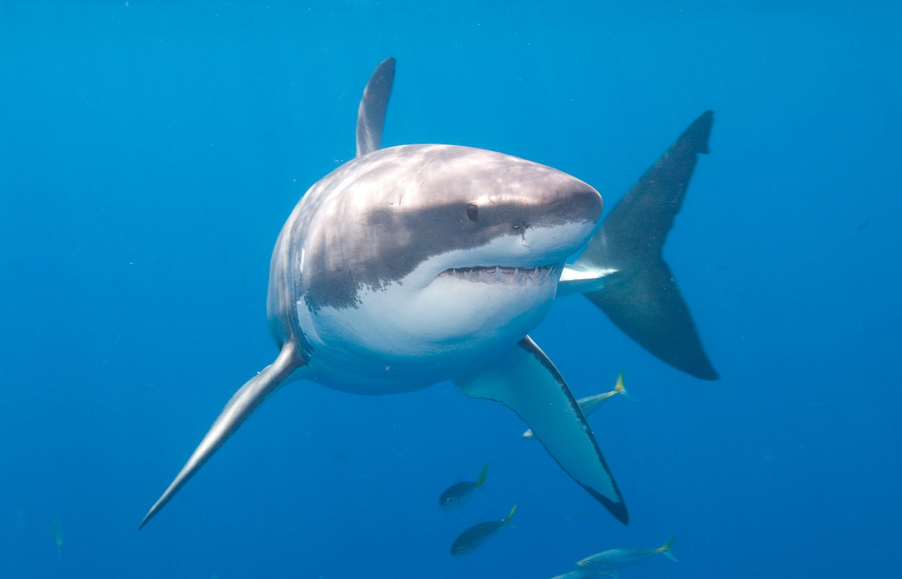
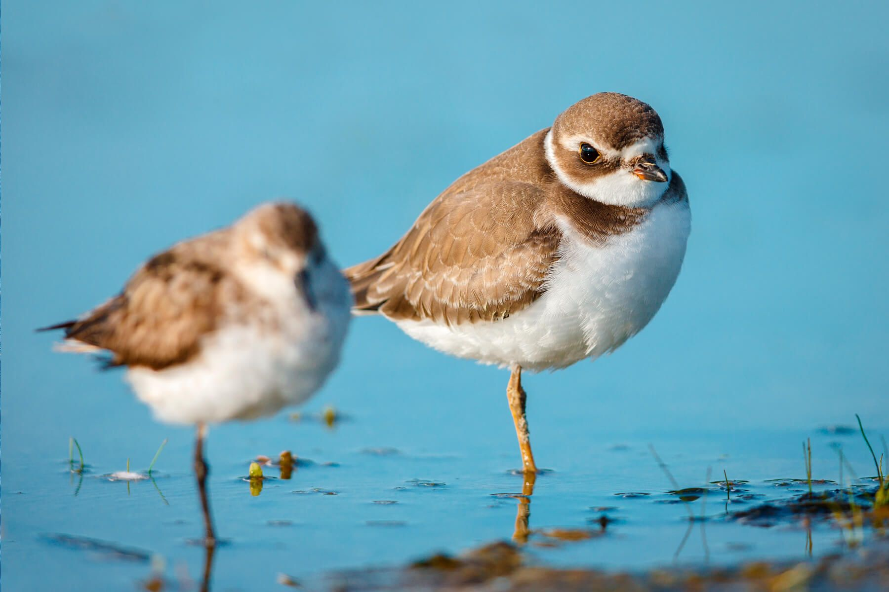

Quiénes somos?
La Fundación Alcalah es una entidad privada sin ánimo de lucro dedicada a la protección del medio marino y de las especies que lo habitan. Sus líneas de actuación son la clínica y rescate de fauna marina, la investigación y conservación de especies y ecosistemas marinos, y la sensibilización a favor de la conservación de nuestros mares y océanos.
Qué hacemos?
Clínica y rescate
La Fundación Alcalah, a través de su proyecto SERVIMAR, se encarga del rescate y la recuperación de especies marinas amenazadas que llegan a la costa catalana. Para ello, dispone de un centro de recuperación puntero, un vehículo de rescate y un equipo técnico humano disponible las 24 horas del día, los 365 días del año, que permite mantener un sistema de respuesta inmediata y permanente. Cientos de cetáceos, tortugas y aves marinas aparecen a lo largo de todo el litoral con lesiones severas o enfermedades, la mayoría de las veces causadas por la interacción humana. Contaminación, vertidos tóxicos, o captura accidental en las diferentes artes de pesca, son algunas de las amenazas que ponen en peligro a estos animales. El objetivo de CRAM es rescatar a estos animales para recuperarlos y reintroducirlos en su hábitat con la mayor brevedad posible. Las instalaciones del Centro de Recuperación están destinadas a ofrecer una adecuada asistencia veterinaria y a facilitar el manejo diario de nuestros pacientes. El equipo veterinario no solo actúa desde el Centro, también dispone de un equipo móvil totalmente equipado para atender cualquier animal de forma inmediata las 24 horas del día. SERVIMAR es un servicio de asistencia a fauna marina que se realiza gracias a la colaboración de la Generalitat de Catalunya, apoyado por la Fundación Biodiversidad del Ministerio para la Transición Ecológica y el Reto Demográfico (MITECO) en el marco del Plan de Recuperación, Transformación y Resiliencia (PRTR), financiado por la Unión Europea – NextGenerationEU y a través de fondos propios.
Investigación y conservación
La Fundación Alcalah tiene como objetivos fundamentales la investigación, la recuperación y la consiguiente protección de los ecosistemas marinos y las especies que en ellos habitan. Trabajamos activamente para el desarrollo de nuevos proyectos de investigación y de conservación, y junto con otras agrupaciones científicas, tenemos el objetivo primordial de frenar la regresión de las especies marinas, difundiendo nuestro mensaje a nivel nacional e internacional. Desde sus inicios, la Fundación Alcalah ha realizado más de 50 proyectos científicos encaminados a lograr la plena recuperación de los ecosistemas marinos y del resto de seres vivos que dependen de ellos. Nuestras líneas de acción giran alrededor de los ejes: hábitat y especies, contaminación, interacción pesquera y cambio climático.
Recuperracion de tortugas marinas
La Fundación Alcalah para la Conservación y Recuperación de Animales Marinos está desarrollando la segunda fase de un proyecto para la conservación de las tortugas marinas a través de la sensibilización del sector pesquero de arrastre, y de la recuperación y reintroducción en su medio natural de los ejemplares atrapados accidentalmente en estas artes de pesca.
Pacientes
Cientos de tortugas marinas aparecen a lo largo de todo el litoral catalán con lesiones severas o enfermedades, la mayoría de las veces causadas por la interacción humana. Contaminación, vertidos tóxicos o captura accidental en las diferentes artes de pesca son algunas de las amenazas que ponen en peligro a estos animales marinos. El objetivo de Alcalah es rescatar a estos animales para recuperarlos y reintroducirlos en su hábitat con la mayor brevedad posible. Las instalaciones del Centro de Recuperación están destinadas a ofrecer una adecuada asistencia veterinaria y a facilitar el manejo diario de nuestros pacientes. Lamentablemente, además de los pacientes que están en recuperación, en el Centro hay varios ejemplares de tortuga marina que debido sus lesiones o condiciones no podrán ser reintroducidas en el mar, al considerarse que no sobrevivirían en el medio salvaje. De este modo, las tortugas pasan a ser residentes en el Centro de Rescate y requieren de una atención específica a diario; alimentación, limpieza y seguimiento médico. Estas tortugas reciben las visitas de los escolares entre semana y de particulares y familias los fines de semana. Y algunas de ellas participan en los proyectos de investigación que lleva a cabo la Fundación. Todas las tortugas reciben toda la atención diaria que necesitan gracias a la contribución desinteresada de sus padrinos y madrinas. Únete a nuestro programa de apadrinamiento de tortugas y contribuir a la conservación de una especie en extinción.
Especies
FONDOS MARINOS
Muchos de los organismos marinos viven anclados al fondo, pero la disputa para encontrar un lugar estable en el que aferrarse es feroz y no existe superficie en el fondo del mar en la que no encontremos vida. La grandísima variedad de lugares en los que asentarse, así como la oscilante temperatura del agua, la profundidad, el oleaje o la luminosidad provocan que en las profundidades del mar coexista una gran variedad de indispensables ecosistemas En los primeros metros de agua, e incluso en la zona intermareal (entre mareas), suelen dominar en el fondo marino comunidades de algas y plantas marinas. De la misma forma que los bosques, su presencia es de vital importancia ya que son una importante fuente de oxígeno y alimento, además de zonas de cría y escondite para muchas especies animales. A medida que la luz disminuye la proporción entre plantas y animales se va invirtiendo hasta llegar a las profundidades marinas y cuevas, donde la luz escasea y la variedad de especies, colores y formas de animales alcanzan su máxima plenitud. En estas zonas predominan los invertebrados (esponjas, corales, artrópodos…) organismos poco conocidos pero de una diversidad tan elevada como su singularidad. La explotación de los recursos marinos, así como la contaminación, los métodos de pesca agresivos con el fondo o el anclaje y construcción de puertos están provocando la degradación e incluso destrucción de muchos hábitats de vital importancia.
MAMÍFEROS MARINOS
En el grupo de mamíferos marinos se agrupan organismos de familias muy diversas que comparten dos características, por un lado alimentan sus crías con leche materna (característica propia de todos los mamíferos) y por otro lado viven en el medio acuático marino, en el que se alimentan y mayoritariamente pasan toda su vida. Teniendo en cuenta estas condiciones, se incluyen en el grupo de mamíferos marinos animales extremadamente divergentes, desde un oso polar hasta un delfín. Las adaptaciones adquiridas por estos organismos para su vida en el medio acuático son numerosas y generalmente están ligadas a tres habilidades: la natación (modificado las extremidades e incluso transformándolas en aletas), la respiración (adquiriendo adaptaciones fisiológicas y metabólicas para facilitar la respiración y aumentar la capacidad de apnea) y la regulación de la temperatura del cuerpo (desarrollando densas capas de grasa y modificando el sistema circulatorio para minimizar la pérdida de temperatura). Según la Unión Internacional para la Conservación de la Naturaleza (UICN), una cuarta parte de los mamíferos marinos están amenazados, siendo la captura involuntaria, la contaminación química y acústica o la disminución de las especies presa las principales causas de la regresión de las poblaciones de este heterogéneo grupo de animales.
REPTILES MARINOS
Los reptiles son organismos vertebrados adaptados a la vida terrestre que poseen el cuerpo recubierto de escamas córneas y que respiran por pulmones. Teniendo en cuenta esto, podríamos definir a los reptiles marinos como animales terrestres adaptados a la vida marina. Comparten las principales características de los reptiles terrestres pero su físico ha tenido que modificarse para facilitar su vida en el agua, mejorar la natación y aumentar su apnea. Existen pocas especies de reptiles marinos, entre las que encontramos 7 especies de tortugas marinas, una iguana de mar, alrededor de 75 serpientes marinas y una especie de cocodrilo de agua salada. De entre todos los reptiles marinos, en las aguas mediterráneas podemos encontrar tres especies de tortugas marinas todas ellas amenazadas según la UICN. La reproducción de las tortugas marinas se realiza en las zonas costeras, por lo que su conservación no solamente está afectada por la actividad humana a mar abierto, sino también por la extensa explotación del litoral (construcción en las playas, contaminación lumínica y acústica, depredación de los nidos…). La recopilación de datos de diversos estudios científicos sitúa entre 100.000 i 150.000 el número de tortugas que son capturadas de forma involuntaria en el mar Mediterráneo. A demás de la pesca accidental, la contaminación marina (productos tóxicos, vertidos de petróleo, plásticos…) y la colisión con embarcaciones son imponentes causas de la disminución de las poblaciones de estos reptiles.
PECES
Incluimos en el grupo de los peces todos aquellos animales acuáticos, con columna vertebral, que respiran por branquias y que generalmente tienen aletas y el cuerpo recubierto por escamas. La diversidad de peces es muy elevada, y generalmente va ligada al lugar en que viven. Los peces mediterráneos más conocidos son alargados, de colores grisáceos y los encontramos mar adentro como la sardina o el atún, pero en el mar existen también peces planos que viven en el suelo como el lenguado, peces alargados que viven en agujeros como la morena e incluso peces de formas tan insólitas como la del caballito de mar. Entre los peces con mandíbula (los más conocidos) encontramos dos subgrupos, los peces con esqueleto de cartílago (cartilaginosos) que integran los tiburones, las rayas, y las quimeras; y los peces con esqueleto de hueso (óseos) que corresponden a la mayoría de las especies comerciales. La excesiva explotación de determinadas especies de peces (sobrepesca) ha perjudicado considerablemente su población, y a pesar de que el control sobre la pesca comprenda medidas tan diversas como las vedas, las tallas mínimas, los cupos de pesca o la definición de espacios en los que está prohibido pescar, la problemática persiste. En algunos casos las leyes son inexistentes o muy mejorables, mientras que en otros el elevado valor económico del comercio de determinadas especies hace que, a pesar de existir una legislación para el control de su pesca, esta ley sea infringida.
AVES MARINAS
En el grupo de aves marinas se agrupan organismos de familias muy diversas que comparten un mismo territorio, el mar y litoral. Las aves marinas pasan la mayor parte de su vida (a menudo más del 90%) en el medio marino, a pesar de ello, están ligadas a la tierra, lugar en que se reúnen para criar generalmente en colonias que pueden acoger varios miles de parejas. Las aves marinas poseen adaptaciones especiales para su supervivencia en el medio acuático, tales como su dieta, basada principalmente en animales acuáticos (peces, invertebrados, plancton…) o su cuerpo adaptado al buceo (plumas hidrófobas, capacidad de apnea, fisionomía apta para la natación…). Las aves marinas son consideradas el grupo de aves más amenazado en la actualidad. Según la Unión Internacional para la Conservación de la Naturaleza (UICN), el 28% de las 346 especies de aves marinas del planeta se encuentran amenazadas, y otro 10% de las especies están catalogadas como “Casi Amenazadas”. La pesca accidental, la contaminación, la construcción de infraestructuras en los mares y litoral son las principales causas de recesión de estas singulares especies de aves.
